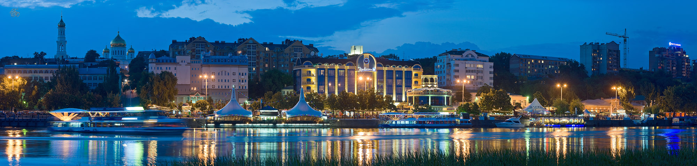

В каталоге представлены достопримечательности города Ростов-на-Дону: музеи и галереи, церкви и соборы, парки, развлечения — с названиями, подробным описанием, фото. Объекты собраны списком, а также отмечены на карте. Для музеев и парков развлечений указана стоимость билетов и график работы. Из статьи вы узнаете, какие места стоит посетить обязательно и куда сходить, если вы путешествуете с ребенком.
Ростов-на-Дону, столица Южного федерального округа, стоит на великой полноводной реке, воспетой Михаилом Шолоховым в его романе-эпопее «Тихий Дон». История города начинается с 1749 года, когда на правом берегу Дона была основана таможня, а затем и крепость святого Дмитрия Ростовского (1760—1761 гг.), которая была важным стратегическим пунктом в период последующих русско-турецких войн. Постепенно вокруг крепости появлялись новые поселения. В 1807 году она, утратив военное значение, получила статус уездного города, а впоследствии — и название Ростов-на-Дону.
В период Великой Отечественной войны город дважды находился в оккупации и в целом серьезно пострадал от военных действий. Тем не менее его удалось восстановить, и сегодня Ростов-на-Дону — крупный культурный и промышленный центр в южной части России.
По городу приятно гулять, здесь множество парков и скверов, где можно недолго отдохнуть, чтобы продолжить знакомство с историей и культурой. 